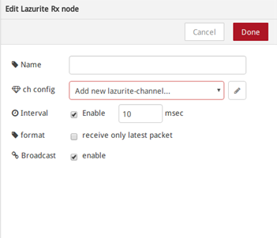
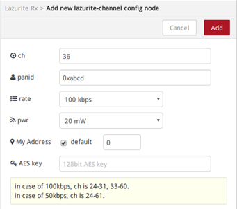
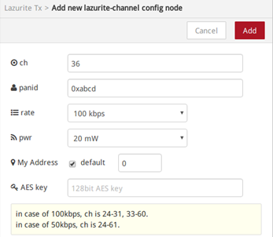
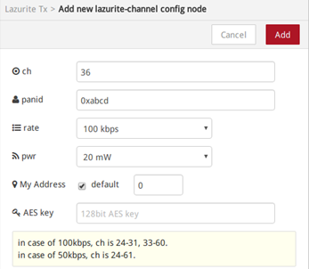
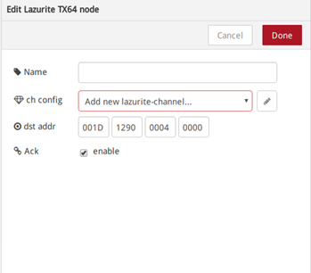
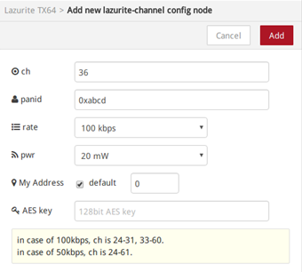
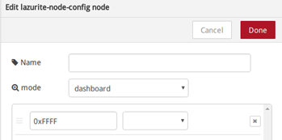
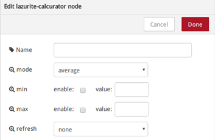

概要
| ノードの名前 | 機能 |
| Lazurite RX | Lazuriteの920MHz無線を受信するためのノードです。 |
| Lazurite TX | Lazuriteで送信をするためのノードです。PANIDと16bitショートアドレスで送信します。 |
| Lazurite TX64 | Lazuriteで送信をするためのノードです。PANIDと64bitのMACアドレスで送信します。 |
| Lazurite Node Config | Lazurite SubGHz用サンプルプログラムと連動して動かすことが出来るノードです。 |
| RasPi Shutdown | Raspberry Piをシャットダウンするノードです。 |
| RasPi reboot | Raspberry Piを再起動するノードです。 |
| Lazurite Calcurator | 簡単な計算をするためのノードです |
Lazuriteの受信用ノードです。
1. GUI
 
2. 入力側の仕様
なし
3. 出力側の仕様
・1パケットずつ受信するモード
| msg.payload | 受信データです。 |
| msg.seq_num | 受信したパケットに含まれているシーケンス番号です。 |
| msg.dst_panid | 送信先のPANIDです。 |
| msg.dst_addr | 受信先のアドレスです。 |
| msg.src_panid | 送信元とのPANIDです。 |
| msg.src_addr | 送信元のアドレスです。 |
| msg.rssi | 受信感度です。値は0～255で、255が受信感度が高く、受信感度が悪くなると値が小さくなります。 |
| msg.sec | ドライバが受信した時の時刻(1970年1月1日 0時0分0秒を0として、経過時間を秒で表したLinuxの標準時刻)です。 |
| msg.nsec | ドライバが受信した時の時刻のナノ秒単位(10^-9)の時間です。 |
| msg.header | 受信したデータMACヘッダです。 |
| msg.payload_len | 受信したpayloadのデータ長です。 |
・パケットをまとめて受信するモード
| msg.length | 受信したパケットの数です。1つのJSONデータに4つのデータが含まれているとき、length=4となります。 |
| msg.payload | 受信したデータが配列になります。 |
| msg.payload[n].tag | 受信したパケットのタグ番号です。1つのJSONデータに4つのデータが含まれているとき、受信したパケットの順番に0～3が割り振られます。 |
| msg.payload[n].header | 受信したデータMACヘッダです。 |
| msg.payload[n].seq_num | 受信したパケットに含まれているシーケンス番号です。 |
| msg.payload[n].dst_panid | 送信先のPANIDです。 |
| msg.payload[n].dst_addr | 受信先のアドレスです。 |
| msg.payload[n].src_panid | 送信元とのPANIDです。 |
| msg.payload[n].src_addr | 送信元のアドレスです。 |
| msg.payload[n].payload | 受信したデータです。 |
| msg.payload[n].rssi | 受信感度です。値は0～255で、255が受信感度が高く、受信感度が悪くなると値が小さくなります。 |
| msg.payload[n].sec | ドライバが受信した時の時刻(1970年1月1日 0時0分0秒を0として、経過時間を秒で表したLinuxの標準時刻)です。 |
| msg.payload[n].nsec | ドライバが受信した時の時刻のナノ秒単位(10^-9)の時間です。 |
| msg.payload[n].payload_len | 受信したpayloadのデータ長です。 |
Lazuriteの受信用ノードです。
1. GUI
 

2. 入力側の仕様
3. 出力側の仕様
Lazuriteの受信用ノードです。
1. GUI
 
2. 入力側の仕様
3. 出力側の仕様
Lazuriteの受信用ノードです。
1. GUI

2. 入力側の仕様
3. 出力側の仕様
Raspberry Piをシャットダウンするノードです
1. 入力側の仕様
信号が入力されたらシャットダウンします
3. 出力側の仕様
なし
Raspberry Piをリブートするノードです。
1. 入力側の仕様
信号が入力されたらRaspberry Piをリブートします。
2. 出力側の仕様
なし
簡単な計算を行うノードです。
1. GUI

1. 入力側の仕様
信号が入力されたらRaspberry Piをリブートします。
2. 出力側の仕様
なし